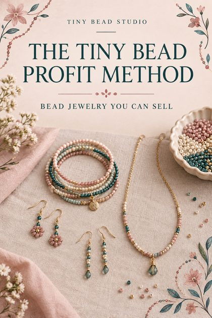
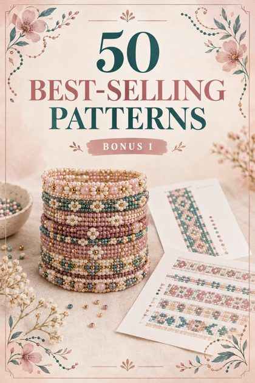
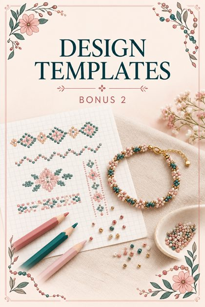
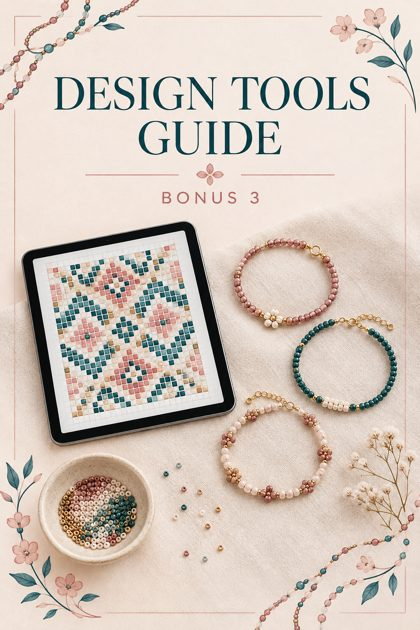
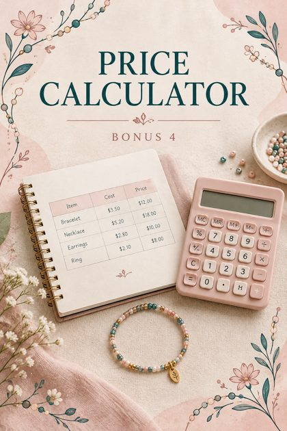
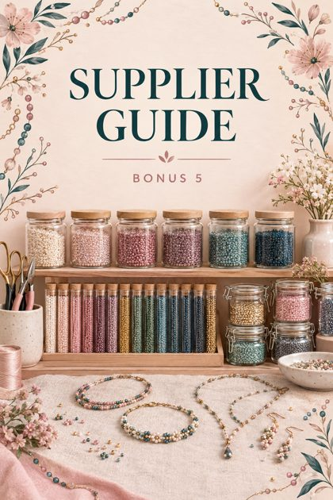
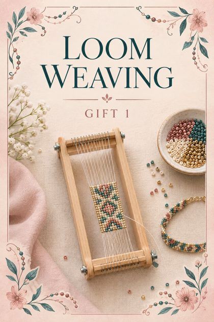
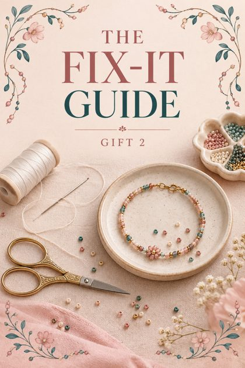

The complete set
The main guide, 7 bonuses and 2 gifts in one ZIP file · 19 MB
Or pick a file

Main guideThe Tiny Bead Profit Method
Start here · 37 pages · PDF 2.4 MB

Bonus 150 Best-Selling Patterns
Charts for bracelets, earrings, pendants, rings · 52 pages · PDF 7.1 MB

Bonus 2Design Templates
Blank grids and planners · 24 pages · PDF 4.2 MB

Bonus 3Design Tools Guide
Make your own patterns · 12 pages · PDF 0.8 MB

Bonus 4Price Calculator
Worksheets and examples · 18 pages · PDF 0.8 MB

Bonus 5Supplier Guide
Where to buy beads and findings · 12 pages · PDF 0.6 MB
Bonus 6Photos That Sell
Phone photography for jewelry · 13 pages · PDF 0.6 MB
Bonus 7From Jewelry to Business
Your first orders · 13 pages · PDF 0.7 MB

Gift 1Loom Weaving
The bonus technique · 22 pages · PDF 1.7 MB

Gift 2The Fix-It Guide
40 common problems solved · 19 pages · PDF 0.5 MB
How to start
- Read Chapters 1–6 of the main guide and gather your starter kit.
- Print the first bracelet chart and stitch it with the step-by-step walkthrough.
- Pick one pattern from the 50 Best-Selling Patterns and make it in your own colors.
- Use the Price Calculator and the Photos That Sell guide before you list your first piece.
If a download does not start, tap “Open” and save the file from your browser. Results depend on practice; selling prices in the guides are examples, not promises.